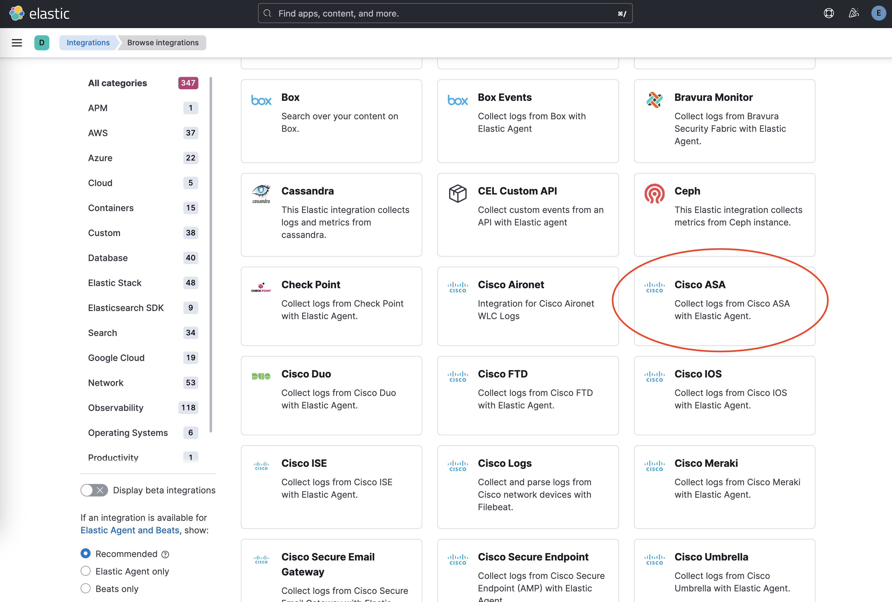

Cribl
editVersion |
0.4.2 [beta] This functionality is in beta and is subject to change. The design and code is less mature than official GA features and is being provided as-is with no warranties. Beta features are not subject to the support SLA of official GA features. (View all) |
Compatible Kibana version(s) |
8.13.0 or higher |
Supported Serverless project types |
Security |
Subscription level |
Basic |
Level of support |
Elastic |
The Cribl integration offers users a way to ingest logs from either of Cribl’s Elastic outputs into Elastic’s Fleet integration data streams. This enables Cribl users to leverage the power of the Elastic Common Schema to unlock predefined dashboards, alerts and more.
Instructions
edit-
Install the relevant integration assets in Kibana
In order to make the most of your data, install Fleet integration assets to load index templates, ingest pipelines, and dashboards into Kibana. In Kibana, navigate to Management > Integrations in the sidebar.
Find the relevant integration(s) by searching or browsing the catalog. For example, the Cisco ASA integration.
Navigate to the Settings tab and click Install Cisco ASA assets. Confirm by clicking Install Cisco ASA in the popup.

-
Configuring the Cribl integration
-
Add informational field to Cribl Source
Configure the Cribl Source to specify the source of the data in the
_dataIdfield.See Cribl Data Onboarding for more information on configuring sources.
-
Configure the Cribl integration in Kibana
Map each
_dataIdconfigured in the step above to the pre-installed Fleet integration’s datastream.The Cribl integration does not require Elastic Agent, but a policy must be configured when setting up the Cribl integration.
-
-
Configure an Elastic destination in Cribl
Cribl offers two options for sending data to Elastic, the Elastic Cloud output for cloud environments, and the Elasticsearch output for self-managed. Consult Cribl Elastic Cloud documentation or Cribl Elasticsearch documentation for more details on how to configure.
Destination settings
- Set Cloud Id for the Cloud destination or Bulk API URLs for the Elasticsearch destination to point to your Elastic cluster.
-
Set Index or Data Stream to
logs-cribl-default. - API key should be a Base64 encoded Elastic API key, which you can create in Kibana by following the instructions under Management > Stack Management > Security > API Keys. If you are using an API key with “Restrict privileges”, be sure to review the Indices privileges to provide at least "auto_configure" and "write" permissions for the logs-* index, which you will be using for these Fleet integration data streams.
Changelog
editChangelog
| Version | Details | Kibana version(s) |
|---|---|---|
0.4.2 |
Bug fix (View pull request) |
— |
0.4.1 |
Bug fix (View pull request) |
— |
0.4.0 |
Enhancement (View pull request) |
— |
0.3.0 |
Enhancement (View pull request) |
— |
0.2.0 |
Enhancement (View pull request) |
— |
0.1.2 |
Enhancement (View pull request) |
— |
0.1.1 |
Enhancement (View pull request) |
— |
0.1.0 |
Enhancement (View pull request) |
— |